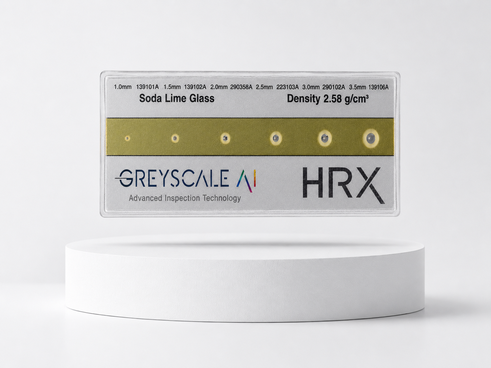

Inspection image
Review the image tied to the event so teams can see what the system saw.
GREYSCALEAI INSIGHTS SOFTWARE
Search, review, document, and export inspection events from the secure software layer your team logs into.
GreyscaleAI Insights connects each inspection image with event metadata, machine context, product and lot information, review status, and exportable evidence so FSQA and operations teams can understand what happened without standing at the machine.
INSPECTION EVENT RECORDS
Each inspection event brings the image, AI result, production context, review status, and exportable evidence into one searchable record. That gives QA and operations teams a shared place to understand what happened and what needs follow-up.
Review the image tied to the event so teams can see what the system saw.
See the event type, result, and review status associated with the inspection image.
Connect the record to product, line, machine, SKU, lot, timestamp, and shift where available.
Export image-backed records for QA review, investigations, verification activity, and follow-up.
SEARCH, REVIEW, DOCUMENT, EXPORT
FSQA and operations teams can move from a broad event search to a specific inspection record, then review the image and context, document what happened, and export evidence when a record needs to be shared or retained.
Filter by time, SKU, lot, line, machine, event type, result, or review status to find the right record quickly.
Open the inspection image with AI result, event details, machine metadata, and available production context.
Use review status, notes, and follow-up actions to keep QA and operations aligned on what happened.
Export image-backed evidence for investigations, verification activity, and audit-support workflows.
SEARCH, REVIEW, ACT
Image History & Event Review helps FSQA teams find the inspection record they need, review the image and production context, and decide whether the event needs follow-up. When the question goes beyond one record, Beyond Rejects helps surface related images and nearby events faster than searching one at a time.
Image History & Event Review
Selected event
Beyond Rejects context
Search helps when the team knows the record they need. Beyond Rejects helps when the question is broader: what happened around this event?
CHALLENGE RECORDS
Plant teams can run routine challenges without navigating the operator interface during production. When a challenge event occurs, GreyscaleAI captures the inspection image, timestamp, product context, line, machine, and result as part of the image history.
Hands-free challenge workflow
Plant personnel use a GreyscaleAI test card to verify system performance without navigating the operator interface.

COMMON USES
See what the system is rejecting during production, away from the machine.
Retrieve challenge images, timestamps, product context, line, machine, and result history for verification and audit support.
Review image evidence and event context for complaints, suspect events, corrective actions, or supplier follow-up.
Connect events to products, shifts, machines, lots, and review activity.
GreyscaleAI helps QA and operations teams review inspection images, document challenge activity, investigate events remotely, and move into Insights when a question requires broader trend or root-cause analysis.